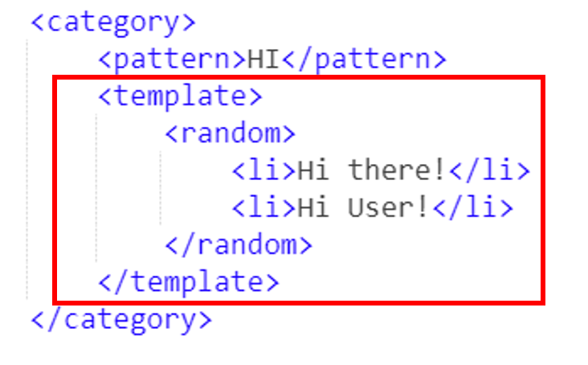
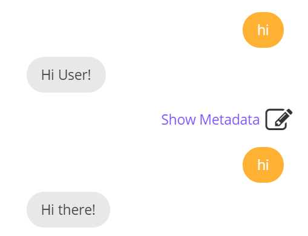

7. <random>标签¶
<random> 标签用于获取随机响应。此标签使AIML对相同的输入做出不同的响应。此标签与 <li> 标签一起使用，<li> 标签带有不同的响应，这些响应将随机发送给用户。
比如，我想实现下面的对话:
User：Hi
Bot：Hi there!
User：Hi
Bot：Hi User! How are you?
可以看到，我想使用不同的方法回应用户，这时就需要用到 <random> 标签。请看下面的代码:

测试：

这个功能是不是很有用呢？我们的聊天机器人慢慢的丰富起来啦！加油！继续学习吧！